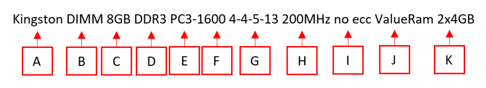

Entender la Etiqueta de una memoria RAM
Si tenemos que comprar un modulo de memoria es esencial que podamos entender la etiqueta que la describe. Las etiquetas de memoria tienen, por lo general, la siguiente información:

Kingston DIMM 8GB DDR3 PC3-1600 4-4-5-13 2000MHz no ecc ValueRam 2x4GB
Significado de las partes de la etiqueta:
- La Marca de la memoria. Si te vas a comprar una te sugiero siempre una marca reconocida, hay unas cuantas, pero kingston es la referencia. Huye de marcas a precios demasiado "baratos", puede que no, pero a medio largo plazo puedes tener problemas.
- El Formato físico del módulo de memoria, actualmente tenemos DIMM para ordenadores de sobremesa y SO-DIMM para portátiles. Antiguamente teníamos los formatos SIMM, ya totalmente obsoletos.
- Capacidad de la memoria, normalmente en Gigas, a no ser que estemos hablando de memorias muy antiguas que podían venir expresados en Megas.
- Tipo de tecnologia utilizada, actualmente tenemos desde DDR, DDR2 (ambas obsoletas), DDR3, DDR4 Y DDR5. Cada una supone mejoras en diversos aspectos como por ejemplo, velocidad con respecto al anterior, y adémas son incompatibles entre ellas.
- PCX: Donde la “X” es un número, es otra forma de llamar al módulo, y equivale a DDRX, es decir, PC=DDR, PC2=DDR2, PC3=DDR3 y así sucesivamente.
- PCX-NUMERO: Representa la tasa de transferencia en MB/seg, y está relacionada directamente con la velocidad o frecuencia de la misma, que se representa en Mhz
- Datos técnicos: La memoria RAM guarda los datos en filas y columnas de manera que cuando quiere leer u escribir algo busca, selecciona y accede a una posición dentro de una fila y columna de manera que sabe exactamente donde está el dato.
Analicemos los datos del ejemplo: 4-4-5-13
- El primer número 4 en el ejemplo) se expresa como CL (Cas Latency) es el más importante de esta lista de números pues es el tiempo que pasó desde que seleccionamos la fila y la columna y salió el primer dato hacia el procesador. por o que cuanto más bajo sea el CL mejor ya que significará que la ram va muy rápido.
- El segundo número (4 en el ejemplo), es el TRCD (Time RAS to CAS delay). El TRCD es el tiempo que tarda la RAM en seleccionar una fila y seleccionar después la columna es decir primero la RAM selecciona la fila “5” y el TRCD es el tiempo que la RAM tarda en darse cuenta que esa fila está ubicada en la columna “C”.
- El tercer número (5 en el ejemplo), se conoce como TRP (Time RAS Precharge), el tiempo que tarda en hacer un salto de linea es decir estoy leyendo la fila “5” y paso a la fila “6”.
- El cuarto y último número (13 en el ejemplo), es llamado TRAS (Active to precharge). Es el tiempo que tarda el controlador de memoria en permitir acceder ya sea para leer o escribir a otra posición de otra fila y columna.
Simplificando, cuanto más pequeños sean todos estos números, más rápida es la respuesta de la RAM.
- Frecuencia de la memoria efectiva en Mhz o más conocida como velocidad de la memoria. Todas las memorias de tipo DDR (Double data range) tienen el doble de la frecuencia de reloj (dos transacciones por cada ciclo de reloj). Indica la velocidad de reloj efectiva, mientras que PCX-xxxx (E, F) indica el ancho de banda teórico (aunque suele estar redondeado). El ancho de banda se calcula multiplicando la velocidad de reloj efectiva por ocho, ya que todas las DDRX (como la DDR) es una memoria de 64 bits, hay 8 bits en un byte, y 64 es 8 por 8. Respecto a la velocidad de reloj se multiplica finalmente, por 2. La relación entre ellas es la siguiente: - Tasa de transferencia / 8 = Frecuencia efectiva o, lo que es lo mismo: - Tasa de transferencia = Frecuencia efectiva * 8 o bien - Tasa de transferencia / 8 /2 = Frecuencia reloj
o lo que es lo mismo: - Tasa de transferencia = Frecuencia reloj “real” x 8 x 2 Por ejemplo: PC3-1600 equivaldría a una DDR3 con una frecuencia de 1600 / 8 = 200Mhz
- Código detector de errores. Normalmente con ECC será un poco más lenta, pero con corrección de errores, y también más cara. La mayoría de los usuarios solo necesitan no ECC (más barata)
- Value RAM (etiqueta)
- Disposición de la memoria total, en este caso, 2 módulos de 4GB cada uno.
Si tenemos por ejemplo los siguientes datos de una memoria RAM (en negritas):